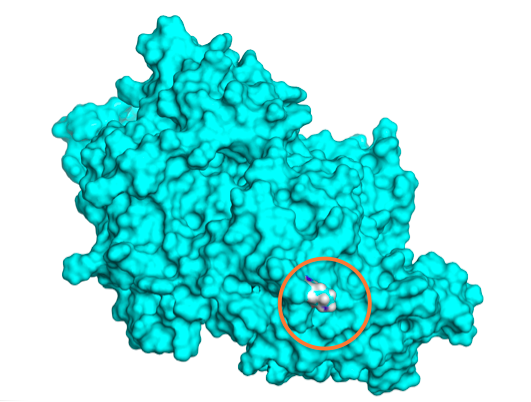

OtoProtein: Site Testing
The OtoProtein project combines the expertise of researchers from the Molecular Otolaryngology and Renal Research Laboratories (MORL) along with Force Field X (FFX) software developers to analyze proteins implicated in hearing loss. A list of the proteins and their structures can be found online at https://github.com/wtollefson/dvd-structures/tree/nshl_protein_study. All structures in the OtoProtein project were chosen from a comprehensive list of deafness associated genetic variants identified in the Deafness Variation Database (DVD). Shown below are examples of the OtoProteins that have been researched and refined using FFX algorithms.
DVD Proteins
|
GJB2 Hexamer: A cell membrane protein. |

MYO7A: Solvent exposed K268R variant. |

DFNB31: The DFNB31 structure pictured in purple was obtained from SwissProt. After rotamer optimization, the optimized structure pictured in blue shows an increase in beta sheet. |
USH2A R1777W: The arginine to tryptophan residue shown in green resulted in a stabilizing free energy change of 1.42 kcal/mol. |